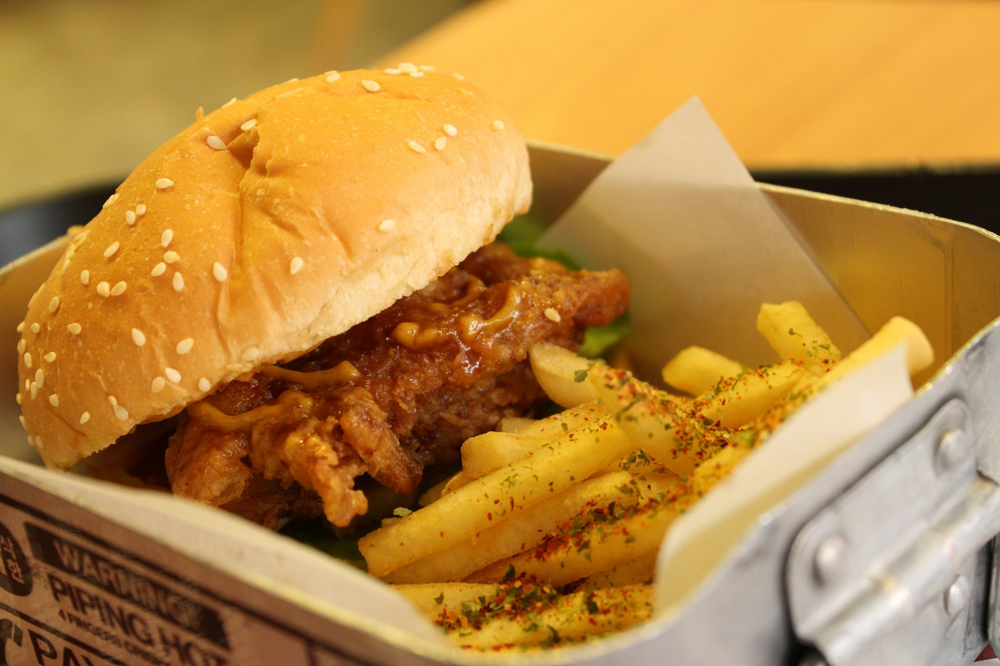

Chicken Burger

A chicken burger is typically consists of boneless, skinless chicken breast or thigh served between slices of bread, on a bun, or on a roll.
A tasty chicken burger that has spices added to it to make a good burger to eat with a salad, or you could add it to soups or casseroles to make them stretch further
Ingredients
- 4 slices whole-grain bread, torn into chunks
- ½ cup quick-cooking oats
- 1 teaspoon salt
- 1 teaspoon dry mustard
- 1 teaspoon celery seed
- 1 teaspoon ground cumin
- 1 pound ground chicken
- 1 onion, finely chopped
- 1 egg
- 2 tablespoons canola oil
Steps
- Process bread in a food processor until you have fine bread crumbs.
- Stir bread crumbs, oats, salt, mustard, celery seed, and cumin together in a bowl. Mix chicken, onion, and egg together in a separate bowl; add bread crumb mixture to chicken mixture and mix. Divide and shape mixture into 7 patties.
- Heat canola oil in a large skillet over medium heat. Cook patties in hot oil until browned each side and no longer pink the center, about 5 minutes per side.